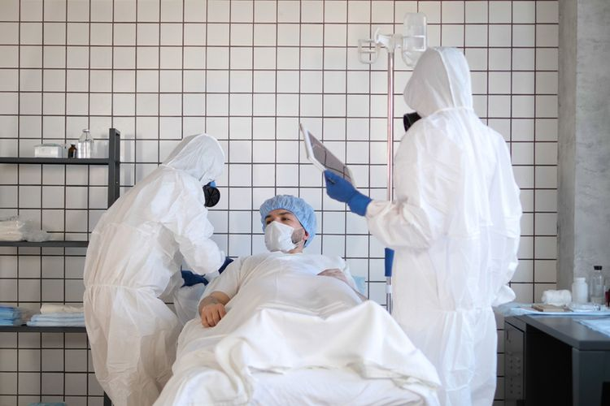

Protokol Kesehatan : Antara Jargon dan Guyon
Kompas.com - 24/09/2020, 19:45 WIB

Editor : Bestari Kumala Sari
Sudah satu semester kita punya kata-kata dan frasa baru sehubungan dengan pandemi yang tak kunjung usai ini. Salah satu yang paling sering dipakai adalah istilah “ Protokol Kesehatan”. Semua bisa lolos dan disetujui, apabila dua kata ajaib itu disisipkan. Jika dipersempit, protokol kesehatan sesuai pemahaman awam adalah mencuci tangan pakai sabun (atau semprotan hand sanitiser), menjaga jarak aman, dan memakai masker. Dari ketiganya, primadona yang paling mudah diawasi adalah penggunaan masker. Pertama yang diributkan adalah cara pakainya. Indonesia belajar cukup lama untuk bisa memproklamirkan cara pakai yang benar, bahkan para petingginya sejak awal pandemi lebih dahulu mengajarkan cara yang salah, hingga terlanjur diikuti rakyat dan sekarang kita cape sendiri meluruskannya. Entah kenapa, sulit sekali untuk menunjuk seorang dokter atau perawat yang sudah fasih menggunakan benda satu itu dalam rapat kabinet atau memutar videonya sebelum acara-acara virtual sebagai bagian dari K3 (kesehatan keselamatan kerja) di zaman pandemi. Kedua (dugaan saya) yang akan diributkan nanti adalah cara melepas, menyimpan, mencuci atau membuangnya. Semua yang tertulis dalam panduan, rupanya bagi orang Indonesia harus dibeberkan secara visual dan frontal. Klaster penularan dalam keluarga atau kantor, bisa jadi bukan semata-mata karena ada salah satu orang yang membawa virusnya sebagai orang tanpa gejala, tapi juga bisa dari masker itu sendiri - yang sudah sarat dengan percikan orang sana-sini dan saat dilepas tergeletak begitu saja di meja kantor, meja makan, kursi atau bahkan tergantung di rak baju untuk dipakai lagi kapan saja, jika mau keluar rumah. Lalu, virus dan percikan yang tak kasat mata menyebar bebas tanpa ada yang sadar. Ketiga – ini sudah ramai: soal kualitas bahan masker. Begitu banyak orang lebih memerhatikan kenyamanan atau bahkan estetika. Alhasil secara fungsional nol besar. Mulai dari bahan sintetis yang dikenal sebagai ‘scuba’ yang jadi pilihan para pria dengan alasan ‘enggak panas’ dan praktis, hingga bahan brokat yang oleh kaum hawa dinilai modis. Semuanya bikin ‘tepok jidat’. Tujuan sebenarnya menggunakan masker sudah kesasar sama sekali. Bahan scuba tak mampu menahan hembusan angin, bahkan droplet bisa tembus. Sementara brokat dan semua ‘masker fashion’ ujung-ujungnya justru mengumpulkan droplet beserta virusnya di sela-sela bahan atau manik-manik perniknya. Kemudian, menjaga jarak aman. Bukan rahasia umum lagi: ini protokol yang paling mudah dilanggar. Tidak banyak yang menyadari, jarak aman itu bukan sekadar bebas 1.5 meter ke kiri dan bebas 1.5 meter ke kanan, tapi juga jarak yang sama berlaku untuk orang di depan dan belakang kita. Ibaratnya, saya menjadi poros dan 1.5 meter adalah jari-jari lingkaran ‘bebas manusia lain’ di sekeliling saya. Jadi, protokol kesehatan yang satu ini mustahil diterapkan di mana pun. Apalagi, di kota padat penduduk. Mencuci tangan pakai sabun dan air mengalir, dari sekian banyak pos yang pernah saya amati dari kejauhan, hampir semua tempat ‘ada masalahnya’. Pertama, antrian mencuci tangan saja sudah kurang dari 1.5 meter. Itu mirip seperti simulasi pembukaan sekolah yang pernah ada di televisi. Di kelas duduk berjauh-jauhan, giliran cuci tangan, murid-murid bersenggolan dan cekikikan berkerumun di sekitar keran. Belum lagi tentang 6 langkah cuci tangan, tidak semua orang paham. Jadi mencuci tangan lagi-lagi hanya formalitas. Pun setelah cuci tangan, keran ditutup menggunakan tangan yang diandaikan sudah ‘bebas kuman’ – sementara kerannya tidak. Kontaminasi lagi. Atau mengeringkan tangan dengan tidak benar. Lebih celaka lagi, habis cuci tangan, kembali terkontaminasi, karena memegang berbagai benda yang disentuh bersama. Pelanggaran protokol kesehatan juga diam-diam terjadi pada orang-orang yang mengawasi dan yang memberi sanksi. Marahnya publik dan kekecewaan pakar kian memuncak saat sanksi hanya berupa kekonyolan guyon. ‘Hukuman’ joget atau push up yang sama sekali tidak membuat orang paham, apalagi bersifat mendidik. Penerapan aturan di negeri ini masih seperti taman kanak-kanak yang siswanya belum dewasa, belum cukup umur, belum mempunyai kematangan otak depan – prefrontal korteks – yang bisa membedakan antara baik buruk dan benar salah.  Kita sudah merdeka 75 tahun. Dengan pagebluk yang merenggut nyawa tanpa ampun dan menular begitu beringas, kita diuji apakah literasi kesehatan sudah sesuai dengan lamanya kemerdekaan yang mestinya sesuai dengan taraf kesehatan. Ini juga masa yang menjelaskan dengan amat gamblang: apakah kita masih berat sebelah dengan aspek kuratif – mengobati setelah penyakitnya datang, atau kita sudah fasih menjalankan upaya promotif dan preventif? Latihan mengatasi pagebluk, adalah pelajaran bagus untuk mengatasi banyak masalah kesehatan di negri ini. Bergantung pada harapan akan tersedianya vaksin suatu hari nanti, itu mirip seperti kita berharap pada saudara tua yang akan membebaskan diri dari penjajahan Belanda. Dan betapa menyakitkannya, ternyata si saudara tua malah mengecewakan, lebih bengis serta kejam. Mestinya, apabila 75 tahun kita menabung pengetahuan dan perilaku praktik- praktik kesehatan yang mumpuni, maka di masa seperti ini kita tidak perlu berada dalam dilema prioritas: selamatkan ekonomi atau selamatkan diri. Sebab, apabila untuk selamatkan ekonomi kita harus mengorbankan diri, maka ada yang tidak beres dengan cara mencari nafkah. Ada yang selama ini belum dibenahi. Cara-cara klasik yang sudah tidak sesuai zaman lagi. Risiko penularan Covid-19 saat ini dari klaster restoran atau penjual makanan, bisa menjelaskan risiko penularan TBC, karena cara penularannya sama, melalui percikan atau droplet saluran pernapasan. Hanya bedanya, Covid-19 memberi gambaran akut yang langsung bisa dilacak, sedangkan TBC adalah tipe penyakit kronik yang penderitanya tidak sadar sudah tertular. Pagebluk ini menguak banyak coreng-moreng protokol yang belum atau tidak berjalan dengan baik. Memisahkan mereka yang ‘hanya kelihatan sehat’ (tapi ditopang obat satu plastik) dengan orang-orang yang memang betul-betul hidup sehat. ‘Ketempelan’ virusnya hanyalah tantangan. Apakah tubuh mampu mempertahankan diri atau ambruk ambyar disentak badai sitokin? Ini adalah saat krusial, ketika literasi kesehatan mengalami ulangan mendadak. Siapa yang ikut kelas mengarang konspirasi dan siapa yang punya integritas mempertanggungjawabkan opini? Bertahan hidup, tidak sama dengan menjual bualan. Kini adalah momen, dimana pelan-pelan nampak keberpihakan, kesempatan mengangkat literasi kesehatan atau celah konspirasi memanfaatkan peluang mencari uang di tengah kesempitan. Semoga istilah protokol kesehatan dipahami sebagaimana adanya, yang memang ada batasan-batasan rigid tak boleh dilanggar. Sebab pagebluk yang kita hadapi tidak kenal kompromi, tak kenal negosiasi, apalagi birokrasi. Hentikan jargon dan guyon, jika kita sungguh-sungguh mau ‘move on’.